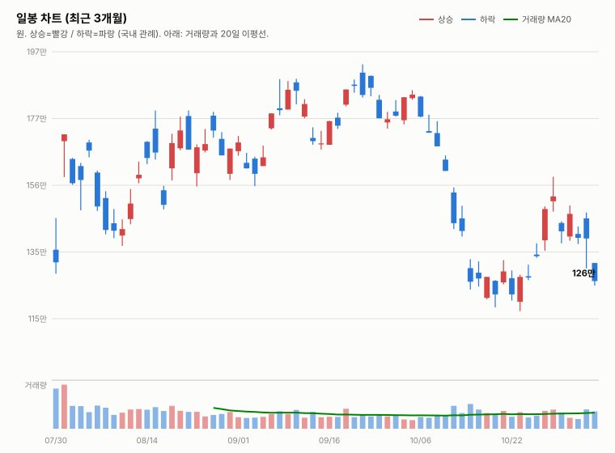
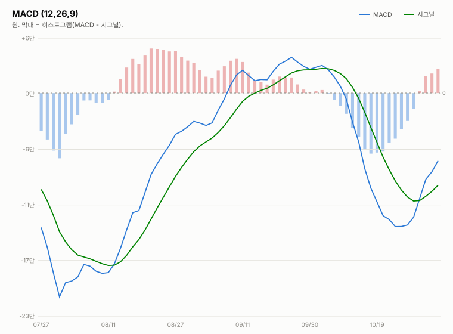
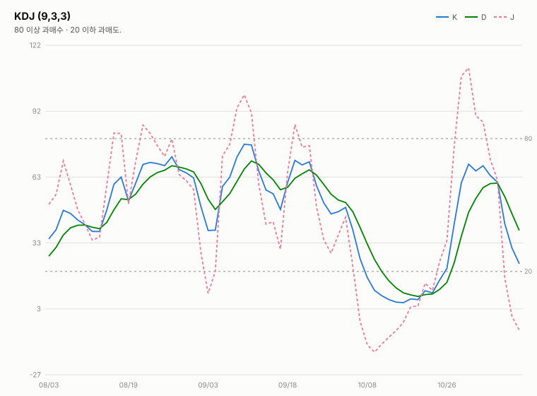
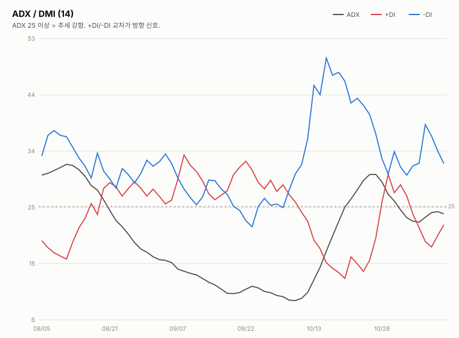
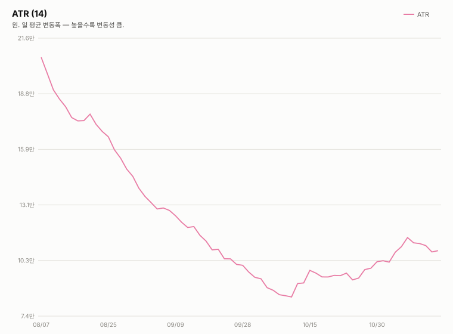

SK하이닉스 KRX 000660 · NASDAQ 상장(7/10)
작성 2026-11-12 09:46 KST · 장중 업데이트(현재가·OHLCV는 야후 quote.json 09:24 기준의 20분 지연 시세이며 개장 24분 누적 거래량입니다. 등락률은 11/11 확정 종가 기준 · 간밤 지표는 night.yml 11/12 08:04 스냅샷 · 3Q26 실적·주주환원·증권사 수치는 헤드라인·검색 요약 기준) · 확정 판정은 11/11 종가 기준 중립(v2)이며 종가에서만 변경합니다 · 본 자료는 정보 제공 목적이며 투자 권유가 아닙니다





한 줄 결론 — 이번 주 급락의 1차 원인은 ‘미국 중간선거(민주당 의회 장악) 후 AI 데이터센터 규제·투자 둔화 우려 → 미국 AI 반도체 투매(11/5 SOX -12.25%·마이크론 -17.46%)’이고, 외국인의 대규모 순매도(11/2~6 주간 약 10.4~11.1조원)가 이를 코스피와 고베타 메모리 대표주 SK하이닉스에 증폭시켰습니다. 11/10~11/11 한국장은 외국인 순매수 전환(11/10 약 3,532억원, 11/11은 ‘외국인 매수’ 헤드라인만 확인)과 저가 매수로 이틀 연속 반등(SK하이닉스 +6.69%·+5.36%, 127.7만)했고 11/11에는 美 CPI·엔비디아 악재와 야간선물 -1.74% 신호를 이겨냈습니다. 간밤(11/11) 美장은 SOX +5.66%·마이크론 +11.89%·ADR +9.71%로 급등했고(헤드라인상 코어위브 호실적發 AI 훈풍, 제목 기준 원문 미확인) 야간선물도 +1.96%라 오늘은 갭업 신호가 우세하지만(확신도 중간~낮음), 이미 이틀 연속 급반등한 뒤여서 폭과 지속성은 외국인 수급에 달려 불확실합니다.
방법: 한국 시장(코스피·외국인 수급·사이드카) + 해외 시장(미국 지수·반도체·빅테크·VIX) + 국내외 뉴스를 교차해 사건을 시간순으로 놓고, 수치가 복수 출처에서 일치하면 ‘높음’, 매체의 해석이면 ‘중간’, 정황 추정이면 ‘낮음’으로 표시합니다. 수치는 트레이딩뷰 실측(night.yml 2026-11-10 08:04 KST 수집)과 검색 요약 보도를 병기했으며, 원인 기사는 요약 기준이라 원문 확인이 필요할 수 있습니다.
① 시장 현황 — 한국·미국 지수와 빅테크
| 종목·지수 | 11/10(화) | 11/11(수) | 주간 | 11/12(목) 장중 |
|---|---|---|---|---|
| 한국 시장 (KRX 정규장, 해당일 15:30 마감) | ||||
| 코스피 | +4.39% | +2.60% | -7.10% | — |
| 코스닥 | +4.48% | +5.62% | -1.49% | — |
| SK하이닉스 | +6.69% | +5.36% | -12.41% | +0.31% |
| 삼성전자 | +4.74% | +3.57% | -9.05% | — |
| 미국 지수·변동성 (美 정규장, 11/10·11/11 현지 마감) | ||||
| 나스닥 | -0.74% | +1.60% | -0.73% | — |
| S&P500 | -0.38% | +1.31% | -0.22% | — |
| 필라델피아 반도체(SOX) | -0.35% | +5.66% | +0.75% | — |
| VIX (11/11 종가 17.49) | -2.31% | -10.12% | -8.91% | — |
| 미국 AI 반도체·메모리 (공급 측) | ||||
| 마이크론(MU) | -1.10% | +11.89% | -1.42% | — |
| 엔비디아(NVDA) | -5.47% | +2.87% | -14.63% | — |
| AMD | +1.30% | +7.32% | +13.94% | — |
| 브로드컴(AVGO) | +3.91% | +3.99% | +5.62% | — |
| 퀄컴(QCOM) | +1.20% | +1.75% | +6.04% | — |
| SK하이닉스 ADR(SKHY) | -3.51% | +9.71% | -2.83% | — |
| 한국 ETF(EWY) | -2.05% | +6.19% | -4.21% | — |
| 미국 빅테크 (수요 측·플랫폼) | ||||
| 애플(AAPL) | -0.62% | +2.04% | +4.12% | — |
| 마이크로소프트(MSFT) | -2.20% | -2.26% | -4.15% | — |
| 알파벳(GOOGL) | -0.27% | +2.11% | +3.51% | — |
| 아마존(AMZN) | +1.48% | -1.74% | +0.51% | — |
| 메타(META) | +0.00% | -1.97% | -1.93% | — |
| 테슬라(TSLA) | +0.46% | +2.91% | +2.91% | — |
주간=트레이딩뷰 Perf.W(한국은 11/11 종가, 미국은 11/11 현지 종가 기준 1주 변동)이며 보도의 주간 수치와 기준 시점 차이로 다를 수 있습니다. 한국장은 미국장보다 먼저 열려 11/11 한국장은 11/10 美 조정(CPI 쇼크·엔비디아 급락)을, 오늘(11/12) 한국장은 11/11 美 반도체 급등을 반영합니다.
② 원인 사슬 — 시간순
| 시점 | 사건·수치 | 확신·출처 |
|---|---|---|
| 11/3(화) 美 | 미국 중간선거에서 민주당이 상·하원을 장악. | 높음 — 파이낸셜뉴스·SBS Biz·CNBC 일치 |
| 11/4(수) 美 | 선거 직후 지수는 ‘역대급 랠리’였지만 반도체는 약세: SOX -3.13%·마이크론 -7.00%·SK하이닉스 ADR -5.12%(저장소 night.yml 11/5 수집분). 야간선물 -1.66%. | 높음(수치 실측) / 랠리는 CNN·Yahoo 보도 |
| 11/5(목) 韓 | 코스피 -5.28%(5,383.80), 외국인 약 3.39조원 순매도, 코스피200 선물 급락에 매도 사이드카(10:16), 코스닥 -5.1%대. SK하이닉스 -9.46%·삼성전자 -7.57%. ‘美 증시 상승에도 반도체 약세’로 보도. | 높음 — 헤럴드경제·파이낸셜뉴스·마이데일리 일치 |
| 11/5(목) 美 | AI 반도체 투매: 나스닥 -5.52%(24,315, 2025년 4월 이후 최대 낙폭)·S&P500 -4.36%·다우 약 -1,830p. SOX -12.25%(Yahoo: 2020년 3월 이후 최악)·엔비디아 -9.26%·마이크론 -17.46%·퀄컴 -9%대(분기 가이던스 부진)·브로드컴 -10%대·테슬라 -10.8%·메타 -3.9%·MS -3.6%. 나스닥 시총 약 2.5조달러 증발, 나스닥은 10/6 고점 대비 -10% 조정장, VIX 장중 28.09. | 수치 높음 / 원인(규제 우려) 중간 — CNN·CNBC·Fox Business·SBS Biz·파이낸셜뉴스 |
| 11/6(금) 韓 | 코스피 -6.02%(5,059.69, 장중 -8%대 급락 보도·5,000선 사수), 코스닥 -5.03%(644.27), 외국인 약 2.77조원 순매도(이틀 6조원대), 매도 사이드카(코스닥 09:06·코스피 09:34). SK하이닉스 -10.44%(113.2만, 시가=저가 108.9만)·삼성전자 -6.35%. | 높음 — 디지털데일리·아시아투데이·뉴스핌 + 저장소 실측 |
| 11/6(금) 美 | 반등: 나스닥 +1.09%(24,579)·S&P500 +0.31%·다우 -0.46%, SOX +4.21%(9,390.25)·마이크론 +5.12%·AMD +11.04%·엔비디아 +2.78%. 그러나 주간으로는 나스닥 -3.96%·S&P500 -3.33%로 4주 연속 하락. 보도: 강한 경제지표로 추가 긴축(금리 인상) 베팅 부담. | 수치 높음(실측) / 긴축 베팅은 헤드라인 수준 — Yahoo Finance·UPI·TradingKey |
| 11/7(토) 06:00 韓 | 코스피200 야간선물 795.5(+1.60%, 주간 종가 782.95 대비). 야간 세션 종료 시각(06:00) 값으로 보이나 첫 실측 검증 진행 중. | 중간 — night.yml 실측 |
| 11/9(월) 오후~마감 韓 | 코스피는 장중 고가 5,172.94(+2.2%)에서 마감 5,018.85(-0.81%, 9개월 만의 최저 수준 보도), 코스닥 638.97(-0.82%)로 하락 마감해 오전 반등분을 반납했습니다. 외국인은 6,284억~6,889억원(매체별 상이) 순매도로 7거래일 연속 ‘팔자’였고 기관이 약 7,000억원 순매수로 일부 방어, 개인은 순매도(4,889억~5,318억원, 매체별 상이)로 보도됐습니다. 코스피200 12월물 주간 선물 774.75(-1.05%). SK하이닉스는 고가 119.3만(+5.4%)에서 되밀려 113.6만(+0.35%), 삼성전자 189,900원(+0.64%)으로 마감했습니다. | 높음 — 아시아경제·비즈니스코리아·파이낸스투데이·재경일보 보도와 트레이딩뷰·야후 수치 일치(순매도 금액만 매체별 상이) |
| 11/9(월) 밤 美 | 반등 확대: 나스닥 +2.74%(25,253)·S&P500 +2.35%(7,550), SOX +6.85%(10,034, 1만선 회복)·마이크론 +6.25%·AMD +13.26%(증권사 상향·구글 클라우드 협력 보도)·브로드컴 +8.78%·SK하이닉스 ADR +5.53%·EWY +3.72%, VIX 19.92(-22.31%). 엔비디아만 -4.27%(젠슨 황 관련 이사회 조사 보도, 검색 요약). 유가 하락과 Anthropic 상장 일정 보도가 심리를 지지. | 수치 높음(트레이딩뷰 실측) / 원인은 중간 — Benzinga·TradingKey 검색 요약 |
| 11/10(화) 06:00 韓 | 코스피200 야간선물 820.7(주간 종가 775.85 대비 +5.78%, 야간 세션 종료 시각 값으로 보이나 첫 실측 검증 진행 중). 원/달러 1,341.8(+0.13%). | 중간 — night.yml 실측, 야간선물은 야간 세션 값인지 검증 중(11/9 야간선물 +1.60%는 실제 개장 상승폭보다 과대했음) |
| 11/10(화) 장중~마감 韓 | 갭 상승 출발(SK하이닉스 시가 121.4만 +6.87%, 야간선물 +5.78% 신호) 후 고가 124.2만(+9.3%)·저가 119.0만을 거쳐 121.2만(+6.69%)으로 마감했고, 오후에 하락이 확대됐던 전날과 달리 14:24 이후에도 121만대를 지켰습니다. 코스피 5,239.13(+4.39%, 장중 고가 5,300.92)·코스닥 667.61(+4.48%)로 양 시장에 매수 사이드카가 발동됐고, 외국인 약 3,532억원·기관 약 4,980억원 순매수, 개인 약 1조3,396억원 순매도(코스피, 마감 보도)로 외국인의 7거래일 연속 순매도가 끝났습니다. 삼성전자 198,900원(+4.74%), 코스피200 12월물 주간 선물 813.40(+4.84%). | 높음 — 서울신문·필드뉴스·위키트리·Chosunbiz 보도와 트레이딩뷰·야후 수치 일치(수급 금액은 보도 기준) |
| 11/10(화) 밤 美 | 조정: 10월 CPI가 전월 대비 +0.4%(예상 +0.3%)·근원 +0.3%(예상 +0.2%)로 예상을 웃돌아 연준 12월 금리 인상 기대가 커졌고(미 10년물 약 4.99%, 달러지수 +0.6% 보도, 월러 이사 ‘50bp 인상 고려’ 발언 보도), 나스닥 -0.74%(25,066)·S&P500 -0.38%(7,521)·SOX -0.35%(9,998), 엔비디아 -5.47%(젠슨 황 관련 스캔들·대중 수출 규제 우려로 이틀간 약 -9.6% 보도), 마이크론 -1.10%, MSFT -2.20%, 브로드컴 +3.91%·AMD +1.30%. VIX 19.46. | 수치 높음(트레이딩뷰 실측) / CPI·엔비디아 원인은 중간 — 와우TV·이투데이·국제뉴스·블록미디어·헤럴드경제 등 복수 매체 요약 |
| 11/11(수) 06:00 韓 | 코스피200 야간선물 798.0(주간 종가 812.10 대비 -1.74%, 야간 세션 종료 시각 값으로 보이나 첫 실측 검증 진행 중). SK하이닉스 ADR 129.66달러(-3.51%)·EWY -2.05%, 원/달러 1,342.35(+0.01%). | 중간 — night.yml 실측, 야간선물은 야간 세션 값인지 검증 중(11/9 야간선물 +1.60%는 실제 개장 -0.18%, 11/10 +5.78%는 실제 개장 +6.87%로 차이가 컸음) |
| 11/11(수) 장중~마감 韓 | 갭다운 출발(시가 120.6만 -0.50%)→개장 직후 저가 119.3만(11/9 고가)→오전 반등으로 11/10 고가(124.2만) 돌파→낮 시간 128만 안팎→고가 129.0만(+6.43%)→종가 127.7만(+5.36%). 코스피 5,375.36(+2.60%)·코스닥 705.10(+5.62%)·삼성전자 206,000원(+3.57%), 코스피200 주간 선물 +3.04%(트레이딩뷰 15:52 실측). 외국인·기관 순매매 확정 수치는 확인 불가. | 중간 — 가격·지수는 트레이딩뷰·quote.json 실측, 원인은 추정(촉발 재료 확인 불가) |
| 11/11(수) 밤 美 | 급등: SOX +5.66%(10,564)·마이크론 +11.89%(811.30)·AMD +7.32%·브로드컴 +3.99%·엔비디아 +2.87%(173.73)·SK하이닉스 ADR +9.71%(142.25)·EWY +6.19%, 나스닥 +1.60%(25,466)·S&P500 +1.31%(7,619), VIX 17.49(-10.12%). 빅테크는 애플 +2.04%·알파벳 +2.11%·테슬라 +2.91%, MS -2.26%·아마존 -1.74%·메타 -1.97%로 엇갈림. 연합인포맥스 헤드라인(11/11 23:39)은 ‘코어위브 호실적發 AI 훈풍’이라고 전했으나 원문은 확인하지 못했습니다. | 수치 높음(트레이딩뷰 실측) / 원인은 낮음~중간 — 제목 기준 헤드라인 1건, 영문 검색에서 당일 보도 확인 못 함 |
| 11/12(목) 06:00 韓 | 코스피200 야간선물 852.95(주간 종가 836.55 대비 +1.96%, 야간 세션 종료 시각 값으로 보이나 첫 실측 검증 진행 중). SK하이닉스 ADR 142.25달러(+9.71%)·EWY +6.19%, 원/달러 1,336.67(-0.14%). | 중간 — night.yml 실측, 야간선물은 야간 세션 값인지 검증 중(11/11 야간선물 -1.74%는 실제 시가 -0.50% 후 장중 반전해 +5.36% 마감) |
| 11/12(목) 장중 09:24 韓 | SK하이닉스 시가 128.0만(+0.23%)·고가 128.6만·저가 125.4만, 09:24 지연 시세 128.1만(+0.31%). 추정(확신도 낮음~중간): 간밤 美 반도체 급등(마이크론 +11.89%·ADR +9.71%)과 야간선물 +1.96%에도 시가가 +0.23%에 그친 것은 어제 한국장이 美 약세 신호를 거슬러 이미 +5.36% 올라 간밤 반등의 상당 부분이 선반영됐기 때문으로 봅니다. 오전 변동폭은 125.4만~128.6만으로 3% 안쪽이며 새 촉발 재료는 확인되지 않았습니다. 반증 조건: 외국인 순매수가 붙으며 129.0만(어제 고가)을 돌파하면 선반영 해석이 약해지고, 126.4만 이탈 시 차익 매물 가설이 강화됩니다. 오늘 장중 수급 수치는 확인 불가. | 낮음 |
③ 원인 순위 — 무엇이 얼마나 확실한가
| 순위 | 원인 | 근거 | 확신 |
|---|---|---|---|
| 1 | (오늘 시사점) 간밤 美 반도체 급등(마이크론 +11.89%·SOX +5.66%) — AI 클라우드 실적發 훈풍 추정 | SOX +5.66%(10,564)·마이크론 +11.89%·AMD +7.32%·브로드컴 +3.99%·엔비디아 +2.87%·ADR +9.71%·EWY +6.19%, 나스닥 +1.60%·S&P500 +1.31%, VIX 17.49(-10.12%). 연합인포맥스 헤드라인(23:39)은 코어위브 호실적發 AI 훈풍이라고 전했으나 원문은 확인하지 못했고 영문 검색에서도 11/11 당일 보도를 찾지 못했습니다. 반면 MS -2.26%·아마존 -1.74%·메타 -1.97%로 수요 측 일부는 약세여서 ‘AI 투자 둔화’ 우려가 사라졌다고 단정하기 어렵습니다. | 낮음~중간 — 수치는 실측(night.yml), 원인은 제목 기준 헤드라인 |
| 2 | (11/11 결과) 美 10월 CPI 상회·엔비디아 급락 신호는 개장 직후에만 반영, 이후 반전 | 10월 CPI +0.4%(예상 +0.3%)·근원 +0.3%(예상 +0.2%)로 12월 금리 인상 기대가 커지며 11/10 美장이 하락했고(나스닥 -0.74%, S&P500 -0.38%) 엔비디아는 젠슨 황 관련 스캔들·대중 수출 규제 우려로 -5.47%(이틀 약 -9.6%) 급락했습니다. 반면 SOX는 -0.35%로 버텨(브로드컴 +3.91%·AMD +1.30%) 반도체 전체 투매는 아니며, 야간선물 -1.74%·ADR -3.51%·EWY -2.05%가 오늘 한국장 갭다운 신호입니다. 실제로는 갭다운(시가 120.6만 -0.50%)과 저가 119.3만 확인 뒤 낙폭을 되돌려 SK하이닉스 +5.36%·코스피 +2.60%로 마감해, 이 신호는 하루 종일 유지되지 않았습니다. | 중간 — 美 수치는 실측, 11/11 한국장 반전의 원인은 확인 불가(추정) |
| 3 | 미국 AI 반도체 투매의 한국 전이 | SOX 11/4 -3.13% → 11/5 -12.25%, 마이크론 -7.00% → -17.46%, ADR -5.12% → -13.40%가 한국장에 하루 시차로 반영: 11/5 코스피 -5.28%(SK하이닉스 -9.46%), 11/6 코스피 -6.02%(SK하이닉스 -10.44%). 11/9 美장은 SOX +6.85%·마이크론 +6.25%로 반등해 같은 전이 경로가 반대로 작동합니다(오늘 한국장 반영 대상). | 높음 |
| 4 | 외국인 대규모 순매도(프로그램·선물 연쇄 포함) | 11/5 약 3.39조 + 11/6 약 2.77조원 = 이틀 6조원대, 11/2~6 주간 약 10.4~11.1조원(매체별 상이; SK하이닉스 약 5.4~5.8조, 삼성전자 약 2.2~2.6조). 코스피200 선물 급락에 사이드카 3회(11/5 코스피, 11/6 코스닥·코스피). 11/9: 美 반등 속 코스피가 5,170선까지 올랐다가 외국인 순매도(6,284억~6,889억원, 7거래일 연속)에 막혀 -0.81% 마감. 11/10: 외국인 약 3,532억원 순매수로 전환(기관 약 4,980억원 순매수, 개인 약 1조3,396억원 순매도)하며 코스피 +4.39%·SK하이닉스 +6.69%로 마감해 수급 방향이 반등 지속성을 좌우한다는 해석과 일치. 5거래일 누적은 여전히 대규모 순매도이고 선물·프로그램 비중은 미확인. | 높음(수급 수치·방향 복수 출처 일치) / 선물·프로그램 비중은 미확인 |
| 5 | 트리거: 중간선거 후 AI 데이터센터 규제·투자 둔화 우려 | 파이낸셜뉴스·SBS Biz·CNBC(로이터 인용)가 같은 해석: 민주당 의회 장악 → AI 인프라 확장이 늦고 비싸질 것이라는 우려 → 공급 측(엔비디아·마이크론·브로드컴) 급락. 구체 법안·정책 내용은 보도되지 않음. 주말 보강: 민주당 중진의 AI 규제·개발 일시 중단 촉구 보도와 ‘데이터센터 800~1,000곳 지연 가능’ 분석이 있으나, 다수 분석가는 청문·조사 수준으로 입법 가능성에는 회의적이며 금지가 아닌 둔화 우려가 시장 해석의 핵심. | 중간 — 시장의 해석(구체성 일부 보강, 입법 가능성은 회의적) |
| 6 | 메모리·AI 하드웨어 쏠림 해소(고베타) | 주간 마이크론 -21.95%·SK하이닉스 -21.61%는 엔비디아 -10.67%·AMD -11.70%·브로드컴 -11.20%·SOX -13.5%·코스피 -12.2%의 약 2배. 반면 수요 측 빅테크는 MSFT +1.02%·GOOGL +1.30%·AMZN +11.51%로 버팀. | 중간 — 수치 실측, 해석은 추정 |
| 7 | 개별 악재 중첩 | 퀄컴 분기 가이던스 부진(CNBC 제목), 메타 데이터센터 관련 발언 후 -3.9%(발언 내용 미확인), 11/6 글로벌이코노믹 ‘ADR 13% 폭락…수요 절벽 공포’(제목만 확인). | 중간~낮음 |
| 8 | 심리·거시: 조정장 진입과 긴축 베팅 | 나스닥 -10% 조정장, VIX 28.09(주간 +39%), 11/6 강한 경제지표 → 추가 긴축 베팅 보도(지표 수치 미확인), 원/달러 1,363.64(주간 +1.8%). | 낮음 — 정황 |
④ 분석 판단 (추정 포함)
⑤ 아직 모르는 것과 반증 조건
⑥ 다음 거래일 시사점 — 오늘(11/12, 목) 한국장은 간밤 美 반도체 급등(SOX +5.66%·마이크론 +11.89%·ADR +9.71%)과 야간선물 +1.96%를 반영해 갭업 신호가 우세하지만, 어제까지 이틀 연속 급반등(+6.69%, +5.36%)해 일부가 선반영됐고 어제도 야간선물과 실제 시가의 방향이 엇갈려 폭과 지속성은 불확실하며 확률 관점으로만 봅니다. 외국인 순매수 지속 여부가 핵심 변수입니다. 확정 판정(v2)은 11/11 종가 기준 중립 유지(점수 1·위험 높음)이며 다음 확정은 오늘 종가입니다.
출처(검색 요약 기준, 일부 원문 미열람): CNN 11/5 · CNBC 11/5 · Fox Business 11/5 · Yahoo Finance 11/6 마감 · Yahoo 칩 반등 · UPI 11/6 · 파이낸셜뉴스 11/6 · SBS Biz 11/6 · 헤럴드경제 11/5 · 디지털데일리 11/6 · 아시아투데이 11/6 · StockTwits 마이크론·규제 · Reuters 인용(Devdiscourse) · 글로벌이코노믹 11/9 · MoneyToday EN 11/9 · 헤럴드경제 11/9 · 이투데이 — 코스피 오후 상승폭 축소·외국인 매도 속 5100선 등락 · 재경일보 — 외국인 10조원 매도에 코스피 5000선 급락·주간 11% 하락 · MoneyToday — Retail investors lift Samsung and SK hynix as ETF buying offsets 7-day foreign selling · Invezz — KOSPI today: Why South Korea's stock market rebounded above 5,100 · Finimize — South Korea's KOSPI bounced back as chip stocks recovered · 아시아경제 — 힘 잃고 주저앉은 코스피…0.81% 하락한 5018 마감 · Businesskorea — 외국인·개인 ‘팔자’에 코스피 5,018선 턱걸이 마감 · 파이낸스투데이 — 코스피, 외국인 7일 연속 매도에 0.8% 또 하락 · Benzinga — Nasdaq Jumps 3%, Nvidia Lags Most Since DeepSeek · TradingKey — Nasdaq extends gains 2.7%, SOX reclaims 10,000, Nvidia falls 4% · 서울신문 — 삼성전자 5%·SK하이닉스 7% 강세… 코스피 5272선 반등 · 필드뉴스 — [마감 시황] 코스피, 상승 마감…SK하이닉스·삼성전자 강세 · 위키트리 — 코스피 5239.13 마감…양 시장 모두 4%대 상승 마감 · 진일보 — 삼성전자 20만원·SK하이닉스 120만원 탈환…반도체주 동반 급등 · 와우TV — 美증시, 예상치 웃돈 10월 CPI에 일제히 하락 · 이투데이 — 뉴욕증시, 인플레 불안에 하락…유가 약세 · 국제뉴스 — 젠슨 황 스캔들에 엔비디아 5.5% 급락…CPI 충격에 뉴욕증시 하락 · 블록미디어 — [뉴욕증시 마감] 예상보다 높은 10월 CPI, 엔비디아 5% 하락 · 헤럴드경제 — ‘빅스텝 올 수도’ 금리 우려에 뉴욕증시 또 충격
11/11(수) SK하이닉스는 간밤 美 CPI 상회·엔비디아 -5.47%와 야간선물 -1.74% 신호 속에 시가 120.6만원(-0.50%)으로 갭다운 출발해 개장 직후 저가 119.3만원까지 밀렸다가 반전, 고가 129.0만원(+6.44%)을 거쳐 127.7만원(+5.36%)에 마감했습니다(코스피 +2.60%, 코스닥 +5.62%). 11/12(목)은 간밤 美 반도체 급등(SOX +5.66%·마이크론 +11.89%·ADR +9.71%)과 야간선물 +1.96% 신호 속에 시가 128.0만원(+0.23%)으로 출발했고, 09:24 지연 시세 기준 장중 고가 128.6만원(+0.70%)·저가 125.4만원, 현재 128.1만원(+0.31%)입니다(직전 11/11 15:30 확정 종가 127.7만원). 시가 128.0만(+0.23%)으로 야간선물 +1.96%·ADR +9.71% 신호보다 상승폭이 작게 출발해 125.4만~128.6만에서 등락하며 어제 종가(127.7만) 바로 위를 지키는 모습입니다. 개장 24분 누적 값이라 이후 흐름은 불확실합니다.
종가 기준 지표 흐름은 DMI 격차 9/29 +1.6 → 9/30 +4.3 → 10/1 +2.2 → 10/2 +3.9 → 10/6 -0.8 → 10/7 -4.7 → 10/8 -7.9(종가 확정), KDJ 격차 9/29 -8.4 → 9/30 -8.9 → 10/1 -5.2 → 10/2 -2.2 → 10/6 -8.2 → 10/7 -14.1 → 10/8 -15.1(종가 확정)입니다. 10/8 값은 마감 리포트의 15:14 집계(-7.1·-14.4)에서 종가단일가 반영으로 갱신됐습니다. DMI 약세가 확대되고 KDJ는 과매도 구간(10/8 K 17.3 → 10/14 종가 K 7.3)에 있어 기술적 반등 여지는 있으나 추세 전환 신호는 없습니다. 10/12 값은 15:14 집계(DMI -13.9·KDJ -13.3, 종가단일가 미반영), 10/13 종가 확정 기준은 DMI -26.1·KDJ -10.9, 10/14 종가 확정 기준은 DMI -25.9·KDJ -8.4입니다.
| 전일 시세(확정) — 11/11 (수) 15:30 KST 마감 · 출처: 야후 quote.json(marketTime 15:30 KST 확정)·트레이딩뷰 KRX 피드 교차 확인(시가·고가·저가·종가 일치) · 등락률은 11/10 확정 종가 기준 · 거래량은 시점별로 다름(야후 일봉 3,440,919주·트레이딩뷰 15:52 3,074,632주·20:08 3,182,294주) | |||||
|---|---|---|---|---|---|
| 시가 | 고가 | 저가 | 종가 | 등락 | 거래량 |
| ₩1,206,000 | ₩1,290,000 | ₩1,193,000 | ₩1,277,000 | +5.36% | 3,440,919주 |
| 오늘 시세(진행 중) — 11/12 (목) 09:24 지연 시세(확정 아님) · 출처: 야후 파이낸스 quote.json(20분 지연) · 등락률은 11/11 확정 종가 기준 | |||||
| 시가 | 고가 | 저가 | 현재가 | 등락 | 거래량 |
| ₩1,280,000 | ₩1,286,000 | ₩1,254,000 | ₩1,281,000 | +0.31% | 538,539주 |
11/11 15:30 확정 종가 1,277,000원은 전일(11/10) 확정 종가 1,212,000원 대비 +65,000원(+5.36%)이었고(야후 quote.json marketTime 15:30 KST 확정, 트레이딩뷰 시가·고가·저가·종가 일치), 11/12 09:24 지연 시세 1,281,000원은 11/11 확정 종가 대비 +4,000원(+0.31%)입니다(확정 아님). 아래 기술지표는 야후 일봉(11/11 확정분)에 오늘 09:24 지연 시세를 반영한 장중 잠정치입니다.
| 기술적 지표 — 11/12 09:24 지연 시세 포함 야후 일봉 기준(장중 잠정) · 2026-11-12 09:46 갱신 | ||
|---|---|---|
| 지표 | 값 | 해석 |
| MACD (12,26,9) | -8.58만 / 시그널 -8.73만 / 히스토그램 +0.15만 | 상승 모멘텀(MACD가 시그널 위·0선 아래) |
| ATR (14) | 10.47만 (8.2%) | 변동성 매우 큼 |
| ADX / DMI (14) | ADX 23.4 · +DI 21.4 · -DI 31.5 | 추세 형성 중 · -DI 우위 격차 -10.1(하락 우위, 11/11 종가 -10.3) |
| KDJ (9,3,3) | K 36.5 · D 34.1 · J 41.3 | 중립 구간 · K>D(격차 2.4, 11/11 종가 -1.6) |
| 거래량 / 20일 이평 | 53.9만 주 / 평균 400.3만 주 | 20일 평균의 0.13배(개장 24분 누적, 장중 잠정) |
KDJ는 중립 구간(K 36.5·D 34.1)이고 K>D 격차는 2.4(직전 -1.6, 11/11 종가 -1.6), MACD 히스토그램은 +0.15만로 시그널 위(직전 -0.36만, 11/11 종가 -0.36만), DMI 격차는 -10.1(11/11 종가 -10.3)입니다. 위 지표는 개장 24분 누적 기준 장중 잠정치이며 종가에서 확정됩니다.
11/11 확정 종가(127.7만)와 오늘 장중(09:24 지연 시세 128.1만)을 기준으로 핵심 레벨과 관전 포인트를 정리합니다. 확정 판정은 종가 기준으로만 변경합니다.
| 오늘(11/12, 목) 전망 | |
|---|---|
| 항목 | 내용 |
| 지지선 | 125.4만(오늘 저가) · 127.7만(11/11 종가) · 127.2만(10/16 종가) · 126.4만(11/5 종가) — 보유한 종가 이력(7/10~)의 최저 종가는 122.3만(10/20·10/22)이라 11/6 저가(108.9만) 아래 지지 레벨은 확인 불가 |
| 저항선 | 128.6만(오늘 고가) · 129.0만(11/11 고가) · 130.3만(11/4 저가) · 132.0만(11/5 시가·고가) · 139.6만(11/4 종가) |
| 예상 등락 레인지(참고용) | 11/11 종가 127.7만 ± ATR 10.47만 = 117.2만 ~ 138.2만(참고용, 잠정 ATR 8.2%; 현재 128.1만은 범위 안, 오늘 저가 125.4만은 범위 안) |
| 예정 이벤트 | 4Q26 실적 발표일은 확인 불가라 D-day 산출 불가(3Q26은 10/28 발표) · 간밤 美 반도체 급등을 한국장이 반영하는 정도(연합인포맥스 헤드라인상 코어위브 실적發 AI 훈풍, 제목 기준 원문 미확인) · 11/11 외국인 매수(EBN 헤드라인, 금액 확인 불가)가 이어지는지 · 美 AI 규제·데이터센터 정책 후속(실제 의회 조치는 아직 보도 없음) · 증권사 목표가 11곳 평균 330.8만(메리츠증권 11/11 리포트 320만원 유지, 제목 기준) · 오늘은 목요일이며 다음 거래일은 금요일 11/13 |
| 관찰 포인트 | 오늘 저가 125.4만 지지 여부와 128.6만~129.0만 돌파 여부, 어제 종가(127.7만) 위·아래 공방과 야간선물 +1.96% 대비 실제 상승폭(어제처럼 야간선물과 실제 시가가 엇갈리는지), 거래량(개장 24분 0.13배) 증가 속도와 마감 동시호가 흐름, 외국인 수급 방향(순매수 지속 vs 순매도 복귀, 수치는 확인되는 대로), DMI 격차(-10.1)·KDJ(2.4)·MACD 히스토그램(+0.15만) 개선 지속 여부, MS·아마존·메타 같은 수요 측 약세, AI 규제 후속(F4)·외국인 5거래일 누적 수급(F5) 변화(v2 매수 전환 조건), 4Q 추정치·계약가 하향 보도 여부(F1·F2), 삼성전자·코스피 동조 여부 |
| 상방 시나리오 | 128.6만~129.0만 저항대를 넘어 130.3만 위에서 종가를 확정하면 11/4~11/5 급락 구간의 되돌림이 이어집니다. 다만 v2 판정은 가격이 아니라 F4·F5로 움직이므로 반등만으로는 중립이 유지되며, 매수 전환은 규제 우려 완화와 외국인 5거래일 누적 순매도 완화가 함께 확인될 때입니다 |
| 하방 시나리오 | 127.7만(11/11 종가)과 127.2만(10/16 종가)을 차례로 이탈하면 장중 상승분이 빠르게 반납되고, 11/10 종가(121.2만)와 119.3만(11/11 저가)이 마지막 방어선입니다. 위험 레짐이 높음(ATR 8.2%)이라 하루 ±10%대 움직임도 배제할 수 없고 외국인이 순매도로 복귀하면 F5 부정이 이어집니다. 매도 전환은 가격 하락이 아니라 F1 또는 F2가 -1로 바뀔 때입니다 |
| 야간선물 | 852.95(코스피200 야간선물, 주간 종가 836.55 대비 +1.96%·updateTimeKST 11-12 06:00·20분 지연; 야간 세션 값인지 첫 실측 검증 진행 중) — 실제 개장은 시가 128.0만(+0.23%)으로 야간선물 신호보다 상승폭이 작았고 09:24 지연 시세 +0.31% |
해석 — 간밤(11/11) 미국장은 크게 반등했습니다(나스닥 +1.60%·S&P500 +1.31%·SOX +5.66%, 마이크론 +11.89%, ADR +9.71%, EWY +6.19%; 연합인포맥스 헤드라인은 코어위브 호실적發 AI 훈풍, 제목 기준 원문 미확인). 한국장은 미국장보다 먼저 열려 이 반등이 오늘 반영되는데, 시가는 128.0만(+0.23%)이었고 09:24 지연 시세 기준 장중 고가 128.6만(+0.70%)·저가 125.4만, 현재 128.1만(+0.31%)입니다. 시가 128.0만(+0.23%)으로 야간선물 +1.96%·ADR +9.71% 신호보다 상승폭이 작게 출발해 125.4만~128.6만에서 등락하며 어제 종가(127.7만) 바로 위를 지키는 모습입니다. 어제까지 이틀 연속 급반등(+6.69%, +5.36%)한 뒤라 선반영 여부가 변수이며 원인은 WHY 섹션을 참조하세요. 확정 판정은 11/11 종가 기준 중립(v2: 점수 1·위험 높음)이고 다음 확정은 오늘 종가입니다(방향성 참고일 뿐 가격 예측이 아닙니다).
뉴스 감성 분석 (최신 뉴스, TOP 10건)
SK하이닉스 ADR이 7% 급등했고 코어위브의 호실적이 AI 훈풍을 일으켰다는 연합인포맥스 보도(제목 기준; 정규장 마감 기준 ADR은 +9.71%, 코어위브 실적 수치·일자 확인 불가).
기사 전문 보기 →SK하이닉스가 오작동·해킹 대비 국제 인증을 받아 피지컬 AI 메모리 시장을 공략한다는 매일일보 보도(제목 기준, 인증 종류 확인 불가).
기사 전문 보기 →SK하이닉스 생산직 채용 공고에서 학력을 보지 않는다는 점이 관심을 끈다는 한국경제 기사(제목 기준, 채용 규모 확인 불가).
기사 전문 보기 →칩 24만개가 중국으로 흘러갔다는 사안과 SK하이닉스 목표가 310만원 차이를 다룬 연합뉴스TV 퇴근길머니(제목 기준, 사안 내용·출처 확인 불가; 투자 판단에는 쓰지 않음).
기사 전문 보기 →코스피가 외국인 매수에 2.60% 상승하며 삼성전자·SK하이닉스가 동반 강세였다는 Investing.com(EBN) 기사(제목 기준; 마감 수치는 quote.json·트레이딩뷰와 일치, 외국인 순매수 금액 확인 불가).
기사 전문 보기 →청주 SK하이닉스가 김장김치 600상자를 나눴다는 연합뉴스 청주소식(제목 기준, 전달처 확인 불가).
기사 전문 보기 →SK하이닉스 LPDDR5X가 산업용 기능안전 인증을 획득했다는 디일렉 보도(제목 기준, 인증 종류·등급 확인 불가).
기사 전문 보기 →SK하이닉스가 LPDDR5X의 안전·보안 인증을 확대해 로봇·자율주행 시장을 공략한다는 녹색경제신문 보도(제목 기준, 인증 세부 확인 불가).
기사 전문 보기 →SK하이닉스의 다음 승부를 다룬 조세일보 기사(제목 기준, 핵심 주장 확인 불가).
기사 전문 보기 →쿠키뉴스 “아침부터 찬물”…11주에 하한가 찍은 SK하이닉스를 다룬 기사(제목만 확인, 맥락 확인 불가; 🟢/🔴 분류는 자동이며 오늘 종가는 +5.36%).
기사 전문 보기 →※ 구글 뉴스에서 'SK하이닉스' 최신 기사를 자동 수집해 날짜순으로 표시합니다. 감성(긍정 +1.0 / 중립 +0.0 / 부정 -1.0)은 제목 키워드 기반 자동 분류로 참고용이며, 종합 감성은 Top 10 점수의 평균입니다(+0.30 이상 긍정, -0.30 이하 부정, 그 사이 중립). 카드의 한 줄 요약은 제목과 검색 요약을 바탕으로 정리한 것이며 기사 원문을 확인한 내용은 아닙니다. 웹 페이지에서는 실시간 갱신됩니다.
2Q26 확정 실적: 매출 79.3조·영업이익 60.5조·영업이익률 76%로 분기 역대 최대였고, 3Q26(10/28 공시)는 매출 104.62조(첫 100조 돌파)·영업이익 83.33조(영업이익률 약 80%, 79.7%로 쓴 기사도 있음)·순이익 39.78조입니다. 전분기 대비 매출 +31.9%·영업이익 +37.6%이며, 에프앤가이드 컨센서스(10/18 기준 매출 98.23조·영업이익 76.96조)를 각각 +6.5%·+8.3% 웃돌았습니다. 실적 발표 전 3Q 증권사 추정치 4곳(70.0~80.1조, 평균 76.05조)은 모두 확정치보다 낮았습니다. 순이익은 전분기 대비 약 58% 감소했는데, 검색 요약은 환율 손실과 투자자산 평가손실을 이유로 들었습니다(영업 실적과 별개이며 공시 원문은 확인하지 못함).
4Q26 영업이익 증권사 추정치 — 11/12 09:12 기준 집계 — 실적 발표(10/28) 이후 증권사들이 4분기 전망을 일제히 올렸습니다. 아래 15곳(보도일 10/29~11/3; 11/12 검색에서 11/5~11/12자 신규 추정치·목표가 기사는 확인하지 못함)은 모두 100조원 이상이며 3Q 확정(83.33조) 대비 +21~42%입니다. 대부분 제목·검색 요약만 확인했고, 에프앤가이드의 4Q26 컨센서스는 실적 발표 후 집계를 확인하지 못했습니다(10/18 기준 3Q 컨센서스만 확인).
| 4Q26 영업이익 — 증권사 추정치 15곳 vs 3Q26 확정(83.33조) · 11/3 09:12 재집계(참고용) | ||||
|---|---|---|---|---|
| 증권사 | 4Q26 영업이익(조) | 3Q 확정 대비 | 비고 | 출처·확인 수준 |
| SK증권 | 105.0 | +26.0% | 목표가 400만원 유지·메모리 공급 부족·HBM4 기여 근거 | 10/29 보도 묶음, 검색 요약 기준 |
| NH투자증권 | 102.7 | +23.2% | — | 10/29 보도 묶음, 검색 요약 기준 |
| BNK투자증권 | 103.6 | +24.3% | 목표가 148→165만원 상향·투자의견 보유 유지 | 10/29 보도 묶음, 검색 요약 기준 |
| 유안타증권 | 118.2 | +41.8% | 목표가 330→370만원 상향(10/29 보도 묶음) | 10/29 기준 보도 묶음, 검색 요약 기준 |
| 한국투자증권 | 112.1 | +34.5% | 매출 136.3조(전분기 대비 +30%)·목표가 320만원(헤드라인) | 한국경제 11/3 헤드라인·검색 요약, 원문 미확인 |
| IBK투자증권 | 112.0 | +34.4% | 목표가 400→320만원 하향(10/29 보도 묶음, 검색 요약) | 검색 요약 기준(10/29 전후 보도 묶음, 정확한 보도일 확인 불가) |
| 씨티증권 | 107.0 | +28.4% | 기존 89.8조에서 상향 | 10/29 기준 보도 묶음, 검색 요약 기준 |
| KB증권 | 104.0 | +24.8% | 목표가 350만원 유지·“분기 사상 첫 100조 돌파” 전망(10/29 보도 묶음은 목표가 420→350만원 하향·4Q 89조로 제시, 이후 상향) | 한국경제 11/2 헤드라인·검색 요약 기준 |
| 메리츠증권 | 104.0 | +24.8% | 86조대→103조대 상향이라는 요약도 있어 103~104조(출처마다 다름) | 검색 요약 기준, 104조로 계산 |
| 유진투자증권 | 103.5 | +24.2% | 103조라는 요약도 있음 | 검색 요약 기준, 103.5조로 계산 |
| DS투자증권 | 102.1 | +22.5% | — | 10/29 기준 보도 묶음, 검색 요약 기준 |
| 다올투자증권 | 101.0 | +21.2% | 매출 128.8조·올해 282조/내년 466조(연간) | 한국경제 10/29 헤드라인·검색 요약 기준 |
| 대신증권 | 101.0 | +21.2% | — | 검색 요약 기준(보도일 확인 불가) |
| 삼성증권 | 101.0 | +21.2% | — | 검색 요약 기준(보도일 확인 불가) |
| 신한투자증권 | 101.0 | +21.2% | — | 검색 요약 기준(보도일 확인 불가) |
| 15곳 단순 평균 | 105.2 | +26.3% | 중앙값 103.5조 · 범위 101.0~118.2조 | 검색 요약의 숫자를 그대로 모은 단순 평균(표본 15곳, 참고용) |
| 에프앤가이드 4Q26 | 확인 불가 | — | 이전 검색 요약의 87.27조는 출처·기준일 불명이고 증권사 상향 이전 값일 수 있어 표본에서 제외 | 신규 집계 확인하지 못함 |
매출 추정치는 한국투자증권 136.3조·다올투자증권 128.8조 두 곳만 확인했습니다(평균 132.6조, 차트의 26.4Q(E) 매출 막대에 사용하며 표본이 매우 작음). KB증권은 4Q 영업이익을 104조원(전년 동기 +441%, 11/2 헤드라인)으로 제시했고 10/29 보도 묶음에는 89조원(목표가 하향)으로 전해져 최근 값을 썼습니다. 하나증권 등 “100조원 이상”만 확인된 증권사는 표본에서 제외했습니다. 영업이익률은 MTN 11/2 헤드라인에 “4분기 영업이익률 83%”가 있으나 어느 기관의 추정인지 확인하지 못했습니다. 일부 증권사는 내년 대규모 설비투자가 수익성을 낮출 수 있다고 지적했습니다(검색 요약 기준). 한국경제·파이낸셜뉴스 원문은 이 환경에서 열리지 않아 수치는 모두 검색 요약 기준이며 증권사 보고서 원문은 확인하지 못했습니다.
업계 비교 — 삼성전자는 3Q26 매출 195.3조·영업이익 107.4조로 분기 영업이익 100조원을 처음 넘겼다고 밝혔습니다(10/29, 아주경제·삼성뉴스룸 검색 요약). 두 회사 3Q 영업이익을 합치면 약 190.7조로, 주간한국 11/2 헤드라인(“합산 영업익 190兆”)과 같은 규모입니다. SK하이닉스 4Q 추정치 평균(105.2조)은 삼성전자 3Q 실적과 비슷한 수준입니다.
컨퍼런스콜 정리(SK하이닉스 3Q26, 10/28 발표) — 실적 컨퍼런스콜(뉴스핌 10/28)에서 김우현 CFO는 주요 고객과 내년 HBM 물량·가격 협의를 마무리했고 HBM과 일반 D램의 수익성 격차가 줄 것으로 본다고 밝혔으며, 4Q에 HBM4가 출하량·매출 비중 모두 HBM3E를 넘을 것으로 내다봤다고 전해졌습니다. 3Q 평균판매가(ASP)는 D램이 전분기 대비 20%대 후반, 낸드가 20%대 중반 올랐고, LTA 고객은 14곳이며 D램·HBM이 2029년까지 사실상 완판이라는 발언이 보도됐습니다(TrendForce 10/28 기사·연합인포맥스 헤드라인, 검색 요약 기준).
차트의 점유율은 카운터포인트 25.1Q·25.4Q·26.1Q·26.2Q(26.2Q는 8/4 보도·검색 요약)와 트렌드포스 2026년 연간 전망(E)이며, 3Q26 확정 점유율은 확인하지 못했습니다. 가격 수치의 기준일은 항목마다 표기했고, 수치는 대부분 검색 요약·헤드라인 기준이라 원문 확인이 필요합니다.
주요 확인 내용
| 항목 | SK하이닉스(10/28) | 삼성전자(10/29) |
|---|---|---|
| 3Q D램 ASP(전분기 대비) | 20%대 후반 상승 | 약 +20% |
| 3Q 낸드 ASP(전분기 대비) | 20%대 중반 상승 | 10% 후반 상승 |
| 4Q D램 물량 전망 | 출하 20%대 중반 증가(뉴스핌) | 비트그로스 10% 중후반 |
| 4Q 낸드 물량 전망 | 출하 한 자릿수 중반 증가(기준 시점 불명확) | 비트그로스 10% 중반 |
| HBM4 | 3Q 본격 양산·출하, 4Q 출하·매출 비중 HBM3E 상회 | 3Q 매출 3배, HBM 내 비중 60% |
기준 수치 (신규 발표 확인 못 해 유지, 기준일 표기)
해석 — 삼성전자도 4Q 높은 메모리 가격과 비트그로스를 전망해 가격 환경은 우호적이고, SK하이닉스 4Q 영업이익 추정치가 100조원을 넘는 등 이익 전망은 계속 올라가고 있어 요소 ④ 산업 사이클은 긍정 유지입니다. 다만 삼성전자 HBM4 비중 확대(HBM 매출의 60%)와 카운터포인트 2Q26 HBM 점유율 하락(SK하이닉스 50%·삼성전자 33%, 검색 요약 기준)과 보도 간 점유율 차이, CXMT의 4F² 추격은 SK하이닉스의 HBM 점유율과 고점 논쟁에 영향을 줄 수 있어 카운터포인트 3Q 점유율, 4Q 계약가 실측, HBM4 가격 협상 결과를 계속 점검합니다.
밸류에이션 기준일: 2026-11-12(09:12 집계). 보도일 기준 최근 1개월(10/13~11/12) 증권사별 최신 목표주가를 집계했습니다. 실적 발표 후 변경은 세계일보·재경일보 10/29 보도(“SK하이닉스 목표주가 165만~400만원…증권사 격차 235만원”, 검색 요약) 등에서 확인했습니다: BNK투자증권 148→165만원 상향(투자의견 보유 유지, 최저), IBK투자증권 400→320만원 하향(업황 우려보다 주가와 목표가 사이 괴리율을 반영했다는 설명), KB증권 420→350만원 하향(매수 유지; 11/2 헤드라인은 350만원 유지), 유안타증권 330→370만원 상향, DS투자증권 264만원(뉴스핌 11/10 14:01 ‘리포트 브리핑’ 헤드라인, 기존 9/29 보도와 같은 값이나 11/10 신규 보도로 기준 창 안에 포함), SK증권·교보증권 400만원(최고), 하나증권 360만원 유지, 유진투자증권 370만원(적극 매수, 10/8 보도), 한국투자증권 320만원(한국경제 11/3 07:47 헤드라인, 기존 7/30 보도 470만원에서의 변경으로 보이나 상·하향 표기 확인 불가)입니다. 평균은 증권사별 최신 보도 목표가 11곳의 단순 평균(330.8만원, 중앙값 335.0만원: SK증권 400·교보 400·유안타 370·유진 370·하나 360·KB 350·IBK 320·메리츠 320·한투 320·DS 264·BNK 165)이며, 최고 400만원과 최저 165만원의 차이는 235만원으로 보도와 일치합니다. 유진 370(10/8)·메리츠 320(10/12)은 실적 발표 후 변경 여부를 확인하지 못해 기존 값을 썼고, 교보증권 400만원은 기존 7/9 보도와 같은 값으로 보이나 10/29 보도 묶음의 날짜를 썼습니다. 제외한 항목: 노무라 470만원(9/4 유지분과 같아 신규 여부 확인 불가), RBC ADR 200달러(달러 목표가), 매일경제 11/2 “목표주가 350만원”(주체 확인 불가, KB증권 350만원과 같은 건일 수 있음). 원문 리포트는 이 환경에서 열리지 않아 모두 헤드라인·검색 요약 기준입니다.
최근 1개월 이내 11곳의 평균 목표주가 330.8만 원은 전일(11/11) 확정 종가 127.7만 대비 +159.1% 괴리입니다(11/10 확정 종가 121.2만 기준 +173.0%). 표본이 11곳으로 적고 헤드라인·검색 요약 기준이라 평균은 참고용입니다. 11곳 모두 현재가보다 높지만 최저(BNK 165만원, 보유 의견)와 최고(400만원) 사이 폭이 235만원으로 의견이 크게 갈립니다.
| 투자 포인트 (Bull) | 리스크 요인 (Bear) |
|---|---|
| 목표가 평균(최근 1개월 5곳) 괴리 +151.4%, 메리츠 3Q 영업익 80조 전망·목표가 320만원 상향, 유진 370만·IBK 400만 등 목표주가 유지 보도 | 종가 기준 7거래일 연속 하락(10/2 대비 -31.5%)·10/15 종가 -11.06%·10/13 종가 -10.09%(장중 -10%대 급락·매도 사이드카), DMI -DI 우위·MACD 시그널 하회, 외국인 매도 |
| 메모리 재고 10일 미만, 내년 사상 초유 공급부족 전망, 최대 실적 예고 보도 | ADX 12.7로 추세 강도 약함, ADR 락업 해제 임박·38% 프리미엄 매물 우려, 솔리다임 상장 관련 주주가치 훼손 논란 |
| HBM4 공급가 급등 확정, KDJ 과매도 구간(기술적 반등 여지) | ATR 6.3%로 변동성 매우 큼, 10/12 미국장 SOX -2.67%·마이크론 -3.88% 약세, 야간선물 -2.05%, 집단 산재 신청 등 ESG 이슈 |
| 솔리다임 IPO 추진(가치 재평가 기대)·로봇용 D램 수요 전망(2030년 20배) | 호재성 보도에도 갭다운·종가 -10.09%(호재 둔감), 헤드라인 기준 중국발 기술 추격 우려 |
| 요소 | 점수 | 근거 |
|---|---|---|
| ① 이익추정 리비전 | 긍정(+1) | 4Q26 영업이익 증권사 추정치 15곳 평균 105.2조(3Q 확정 83.3조 대비 +26%), 11/5~11/9 신규 하향 보도 없음 |
| ② 업황 가격 전망 | 긍정(+1) | TrendForce 4Q26 범용 D램 +10~15%·HBM 포함 +15~20%·NAND +15~20% 상승 전망(9/30 발표), 이후 하향 발표 없음(11월 신규 발표 확인 불가) |
| ③ 밸류에이션 괴리 | 긍정(+1) | 목표가 평균 괴리 +159%, 목표가 신선(보도일 이후 주가 변동 -13%). 11/10 종가(121.2만)에서는 같은 규칙이 ‘목표가 낡음(-18%)’으로 0을 줬으나 오늘 반등으로 변동률이 신선도 임계값 안으로 들어와 +1이 됐습니다. 목표가 보도일(10/8~11/10)이 대부분 급락 이전이라 임계값 경계 효과일 가능성이 커 점수 해석에 주의가 필요합니다(규칙은 승인 없이 바꾸지 않고 그대로 적용). 최근 1개월 11곳 평균 목표가 330.8만원 대비 11/11 종가 127.7만원의 괴리율은 +159.0%(헤드라인·검색 요약 기준)이며, 11/11 15:56 재확인에서 신규 목표가 보도는 메리츠증권 11/11 리포트(목표가 320만원, 제목 기준)만 확인했습니다. |
| ④ 정책·외부 이벤트 리스크 | 부정(-1) | 미국 AI 데이터센터 규제·투자 둔화 우려는 실제 입법·정책 구체화 보도가 없는 채 미해소 상태입니다. 11/10 코스피 급반등(+4.39%, 양 시장 매수 사이드카)이 우려 완화를 시사하지만 반등 원인으로 규제 완화를 확인한 보도는 없어(제목만 확인) 방향 점수는 -1을 유지합니다. |
| ⑤ 수급(외국인 5거래일) | 부정(-1) | 외국인은 11/5 약 3.39조·11/6 약 2.77조·11/9 약 0.63~0.69조원 순매도 뒤 11/10 코스피에서 약 3,532억원 순매수로 전환했습니다(마감 보도). 11/11 투자자별 순매매 확정 수치는 검색에서 확인하지 못했고, 코스피 +2.60%·코스닥 +5.62%의 광범위한 반등은 수급 개선을 시사하지만 5거래일 누적은 여전히 대규모 순매도로 추정되어 -1을 유지합니다. 수치가 확인되면 재평가합니다. |